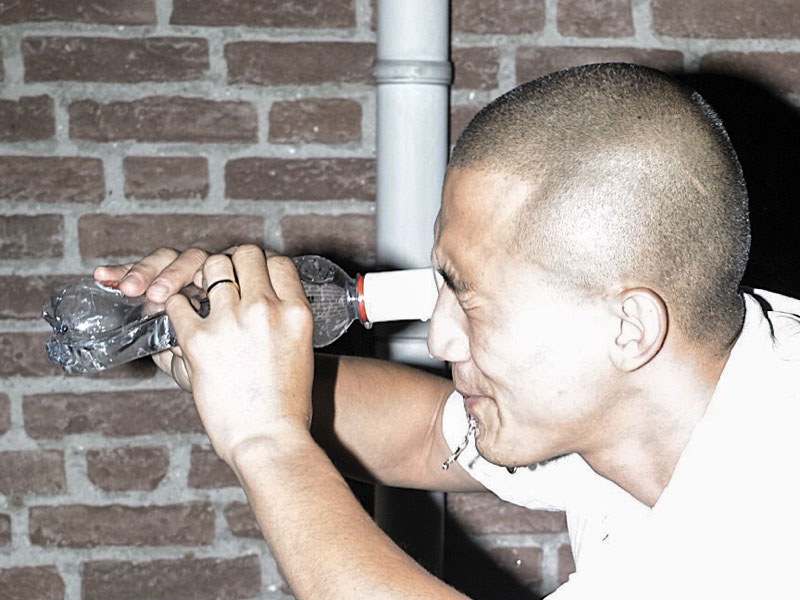

Home
This bottle cap is designed for washing eyes exposed to tear gas / CS gas. You can 3D print this bottle cap and
put it as a lid on plastic water bottles. You can email this 3D model to your friends.

Project by Donghwan Kam
3D Model by Marco Federico Cagnoni
Website by Seokyung Kim